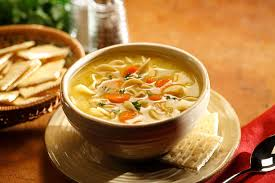

Chicken Noodle Soup Recipe

Description
Chicken soup is a soup made from chicken, simmered in water, usually with various other ingredients. The classic chicken soup consists of a clear chicken broth, often with pieces of chicken or vegetables; common additions are pasta, noodles, dumplings, carrots, potatoes, or grains such as rice and barley.
Ingredients
- Chicken
- Carrots
- Celery
- Onion
- Garlic cloves
- Fresh thyme
- Parsley
- Peppercorns
- Egg noodles
- Black pepper
Steps
- Separate the meat from bones
- Parboli bones for 3 minutes
- Make the stock
- Strain the bones and solids from the stock
- Salt the stock
- Add the sliced carrots and celery to the stock, bring to a simmer
- Add the reserved raw chicken to the stock
- Add the noodles
- Finish and serve
Home